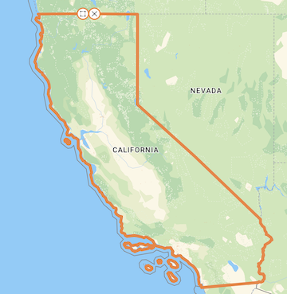
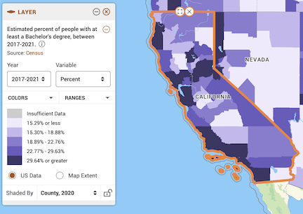
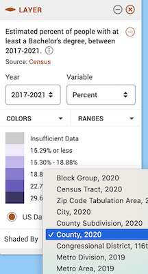
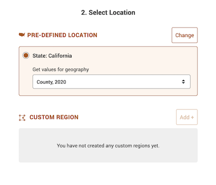
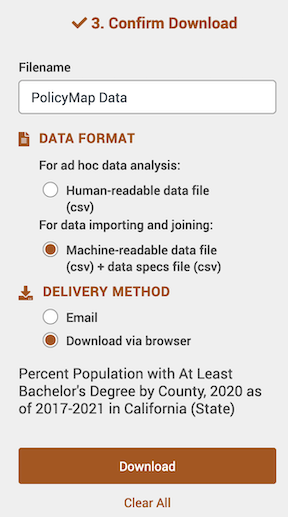
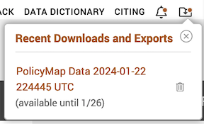
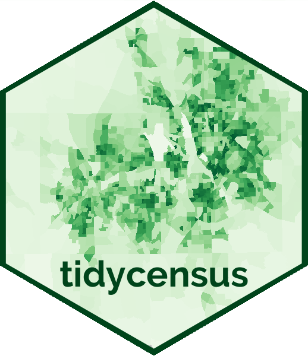
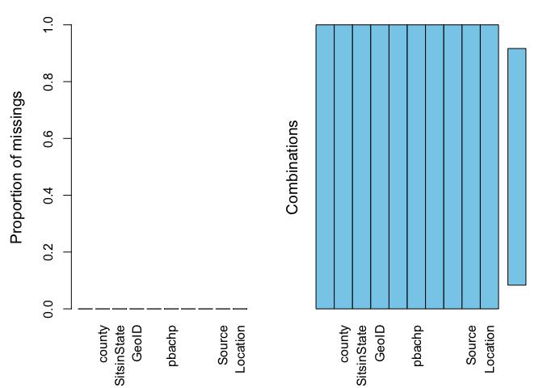

Lab 3: Working with the U.S. Census
CRD 150 - Quantitative Methods in Community Research
Professor Noli Brazil
January 24, 2024
In this guide you will learn how to download, clean and manage United States Census data using R. You will be working with data on U.S. counties. The objectives of the guide are as follows.
- Download Census data using their API
- Download Census data using PolicyMap
- Learn more data wrangling functions
This lab guide follows closely and supplements the material presented in Chapters 4, 8-13 in the textbook R for Data Science (RDS) and the class Handouts 2 and 3.
Assignment 3 is due by 10:00 am, January 31st on
Canvas. See here for
assignment guidelines. You must submit an .Rmd file and its
associated .html file. Name the files:
yourLastName_firstInitial_asgn03. For example: brazil_n_asgn03.
Open up a R Markdown file
Download the Lab
template into an appropriate folder on your hard drive (preferably,
a folder named ‘Lab 3’), open it in R Studio, and type and run your code
there. The template is also located on Canvas under Files. Change the
title (“Lab 3”) and insert your name and date. Don’t change anything
else inside the YAML (the stuff at the top in between the
---). Also keep the grey chunk after the YAML. For a
rundown on the use of R Markdown, see the assignment
guidelines
Installing Packages
As described in Lab 2, many functions are part of packages that are not preinstalled into R. In Lab 2, we had to install the package tidyverse. In this lab, you’ll need to install the package tidycensus, which contains all the functions needed to download Census data using the Census API. We’ll also need to install the package VIM, which provides functions for summarizing missingness in our dataset (a concept covered in Handout 2). Run the following code to install these packages.
install.packages("tidycensus")
install.packages("VIM")Run the above code directly in your console, not in your R Markdown. You only need to install packages once. Never more.
Loading Packages
Installing a package does not mean its functions are accessible
during a given R session. You’ll need to load packages using the
function library(). Unlike installing, you need to use
library() every time you start an R session, so it should
be in your R Markdown file. A good practice is to load all the packages
you will be using in a given R Markdown at the top of the file. Let’s
load the packages we’ll be using in this lab.
library(tidyverse)
library(tidycensus)
library(VIM)Downloading Census Data
There are two ways to bring Census data into R: Downloading from an online source and using the Census API.
Downloading from an online source
The first way to obtain Census data is to download them directly from the web onto your hard drive. There are several websites where you can download Census data including Social Explorer, National Historical Geographic Information System (NHGIS), and data.census.gov. The site we’ll use in this lab is PolicyMap.
UC Davis provides full access to all PolicyMap tools for staff, students, and faculty. You can access the full site only if you are on campus or logged onto the UC Davis VPN Client. The following sections provide step-by-step instructions for downloading data from PolicyMap and reading it into R. We will be downloading the percent of residents with a bachelor’s degree in California counties from the 2017-2021 American Community Survey.
- Navigate to the UC Davis PolicyMap portal. You will need to log in using your UC Davis username and password. You should see a webpage that looks like the figure below. Note the UC Davis logo on the top right. Go Aggies!

- You should see a Location search bar somewhere near the top of the page. Type in “California” in the search bar and California (State) should pop up as the first selection. Click it.
You should get a map that highlights California’s boundaries. Zoom into the state.

- The map does not show any data. Let’s add the percent of residents with a bachelor’s degree in California counties. Click on the Education tab, followed by Educational Attainment and then At least a Bachelor’s Degree.

Now your map should look like the following

- Notice in the legend window you can change various aspects of the variable, including the year
the data type

and the geographic level.

Leave the defaults (Year: 2017-2021, Variable: Percent, and Shaded by: County, 2020). County, 2020 indicates that you want to show the data by county using 2020 county boundaries.
Let’s download these data. At the top right of the site, click on the download icon .
A window should pop up. The first screen on the left shows you what data will be downloaded - it should be “Estimated percent of people with at least a Bachelor’s degree, between 2017-2021” under Layer, with “2017-2021” under Year and “Percent” under Variable already selected.

- The next section asks you to select a location. It should be State: California and County, 2020 for “Get values for geography”.

- The last section asks you to confirm the download. Select Machine-readable data file (csv) + data specs file under “Data Format”. Select Download via browser under “Delivery Method”. Then click on the Download button.

- After a minute or two, a screen like below (on a Mac laptop) should pop up at the top right corner of your screen (the file name will differ from yours). You can download this file again until the date given.

Save the file into an appropriate folder, specifically the folder that contains your Lab 3 RMarkdown, such as below (Mac laptop)

- The file you downloaded is a zip file. You will need to unzip the
file to access its content. To unzip a file on Windows, see here.
On a Mac, see here.
When you unzip it there will be two files: the csv file containing the
data and the meta data (or record layout) for the dataset. Let’s bring
the csv dataset file into R. We covered how to read in data into R in Lab 2. Make
sure your working directory
is pointed to the folder containing the file. Then read in the file
using the function
read_csv().
ca.pm <- read_csv("TYPE THE FILE NAME HERE WITH CSV EXTENSION")If you’re having trouble downloading the file from PolicyMap, I uploaded it onto GitHub. Read it in using the following code.
ca.pm <- read_csv("https://raw.githubusercontent.com/crd150/data/master/PolicyMap%20Data%202024-01-22%20224832%20UTC.csv")When you bring in a dataset, the first thing you should always do is
view it just to make sure you got what you expected. You can do this
directly in the console by using the function glimpse(),
which we covered in Lab 2.
glimpse(ca.pm)## Rows: 58
## Columns: 10
## $ GeoID_Description <chr> "County", "County", "County", "County", "County", "C…
## $ GeoID_Name <chr> "Alameda", "Alpine", "Amador", "Butte", "Calaveras",…
## $ SitsinState <chr> "CA", "CA", "CA", "CA", "CA", "CA", "CA", "CA", "CA"…
## $ GeoID <chr> "06001", "06003", "06005", "06007", "06009", "06011"…
## $ GeoID_Formatted <chr> "=\"06001\"", "=\"06003\"", "=\"06005\"", "=\"06007\…
## $ pbachp <dbl> 49.64, 39.32, 19.52, 29.76, 19.91, 14.65, 44.06, 16.…
## $ TimeFrame <chr> "2017-2021", "2017-2021", "2017-2021", "2017-2021", …
## $ GeoVintage <dbl> 2020, 2020, 2020, 2020, 2020, 2020, 2020, 2020, 2020…
## $ Source <chr> "Census", "Census", "Census", "Census", "Census", "C…
## $ Location <chr> "California (State)", "California (State)", "Califor…After you’ve downloaded a csv file whether through PolicyMap or another source, do not open it up in Excel to manipulate or alter the data in any way. All of your data wrangling should be done in R
Using the Census API
You can bring data directly into R using the Census Application Program Interface (API). An API allows for direct requests for data in machine-readable form. That is, rather than having to navigate to a website using a browser, scroll around to find a dataset, download that dataset once you find it, save that data onto your hard drive, and then bring the data into R, you just tell R to retrieve data directly using one or two lines of code.
In order to directly download data from the Census API, you need a
key. You can sign up for a free key here, which you
should have already done before the lab. Type your key in quotes using
the census_api_key() command
census_api_key("YOUR API KEY GOES HERE", install = TRUE)The parameter install = TRUE tells R to use this API key
in the future so you won’t have to use census_api_key()
again unless you update or re-download R.
The function for downloading American Community Survey (ACS) Census
data is get_acs(). The command for downloading decennial
Census data is get_decennial(). Getting variables using the
Census API requires knowing the variable ID - and there are thousands of
variables (and thus thousands of IDs) across the different Census files.
To rapidly search for variables, use the commands
load_variables() and View(). Because we’ll be
using the ACS in this guide, let’s check the variables in the 2017-2021
5-year ACS using the following commands.
v20 <- load_variables(2021, "acs5", cache = TRUE)
View(v20)A window should have popped up showing you a record layout of the 2017-2021 ACS. To search for specific data, select “Filter” located at the top left of this window and use the search boxes that pop up. For example, type in “Hispanic” in the box under “Label”. You should see near the top of the list the first set of variables we’ll want to download - race/ethnicity.
Another way of finding variable names is to search them using Social Explorer. Click on the appropriate survey data year and then “American Community Survey Tables”, which will take you to a list of variables with their Census IDs.
Let’s extract race/ethnicity data and total population for California
counties using the get_acs() command
ca <- get_acs(geography = "county",
year = 2021,
variables = c(tpopr = "B03002_001",
nhwhite = "B03002_003", nhblk = "B03002_004",
nhasn = "B03002_006", hisp = "B03002_012"),
state = "CA",
survey = "acs5",
output = "wide")In the above code, we specified the following arguments
geography: The level of geography we want the data in; in our case, the county. Other geographic options can be found here. For many geographies, tidycensus supports more granular requests that are subsetted by state or even by county, if supported by the API. This information is found in the “Available by” column in the guide linked above. If a geographic subset is in bold, it is required; if not, it is optional. For example, if you supplycounty = "Yolo"to the above code, you will get data just for Yolo county. Note that you need to supply thestateargument in order to get a specific county.year: The end year of the data (because we want 2017-2021, we use 2021).variables: The variables we want to bring in as specified in a vector you create using the functionc(). Note that we created variable names of our own (e.g. “nhwhite”) and we put the ACS IDs in quotes (“B03002_003”). Had we not done this, the variable names will come in as they are named in the ACS, which are not very descriptive.state: We can filter the counties to those in a specific state. Here it is “CA” for California. If we don’t specify this, we get all counties in the United States.survey: The specific Census survey were extracting data from. We want data from the 5-year American Community Survey, so we specify “acs5”. The ACS comes in 1- and 5-year varieties.
output: The argument tells R to return a wide dataset as opposed to a long dataset (we covered long vs. wide data in Handout 2)
Another useful option to set is cache_table = TRUE, so
you don’t have to re-download after you’ve downloaded successfully the
first time. Type in ? get_acs() to see the full list of
options.
Note that we gathered 2017-2021 ACS data from both Policy Map and the Census API. Boundaries changed in 2020, which means that the 2017-2021 data will not completely merge with ACS data between 2010 and 2019. So make sure you merge 2020 data only with 2020 data (but you can merge 2019 data with data between 2010-2019). This is especially important for tract data, with many new tracts created in 2020 and existing tracts experiencing dramatic changes in their boundaries between 2010 and 2020.
What does our data set look like? Take a glimpse().
glimpse(ca)## Rows: 58
## Columns: 12
## $ GEOID <chr> "06001", "06003", "06005", "06007", "06009", "06011", "06013"…
## $ NAME <chr> "Alameda County, California", "Alpine County, California", "A…
## $ tpoprE <dbl> 1673133, 1344, 40095, 217884, 45349, 21780, 1161643, 27655, 1…
## $ tpoprM <dbl> NA, 228, NA, NA, NA, NA, NA, NA, NA, NA, NA, NA, NA, NA, NA, …
## $ nhwhiteE <dbl> 499730, 730, 30081, 153153, 35925, 7398, 483519, 16617, 14536…
## $ nhwhiteM <dbl> 988, 153, 412, 300, 129, 3, 1519, 283, 461, 677, 69, 604, 171…
## $ nhblkE <dbl> 166017, 8, 930, 3897, 439, 293, 96256, 799, 1492, 42525, 117,…
## $ nhblkM <dbl> 1837, 19, 113, 316, 164, 64, 1554, 138, 213, 1301, 58, 210, 2…
## $ nhasnE <dbl> 524980, 10, 429, 10617, 1020, 144, 203875, 810, 9145, 104266,…
## $ nhasnM <dbl> 2437, 8, 118, 595, 152, 85, 1997, 200, 415, 1215, 172, 348, 2…
## $ hispE <dbl> 374542, 197, 5966, 37982, 5928, 13177, 304321, 5663, 25362, 5…
## $ hispM <dbl> NA, 146, NA, NA, NA, NA, NA, NA, NA, NA, NA, NA, NA, NA, NA, …The tibble contains counties with their estimates for race/ethnicity. These variables end with the letter “E”. It also contains the margins of error for each estimate. These variables end with the letter “M”. Although important to evaluate (we covered margins of error in Handout 3), we won’t be using the margins of error much in this class.
Congrats! You’ve just learned how to grab Census data from the Census API using tidycensus. Here’s a badge!

Data Wrangling
The ultimate goal is to merge the files ca and ca.pm together. To get there, we have to do a bit of data wrangling. We covered many data wrangling functions in Lab 2. We will revisit some of those functions and introduce a few more.
Renaming variables
You will likely encounter a variable with a name that is not
descriptive. Or too long. Although you should have a codebook to
crosswalk variable names with descriptions, the more descriptive the
names, the more efficient your analysis will be and the less likely you
are going to make a mistake. Use the command rename() to -
what else? - rename a variable!
First, let’s look at the ca.pm’s column names by using the
function names()
names(ca.pm)## [1] "GeoID_Description" "GeoID_Name" "SitsinState"
## [4] "GeoID" "GeoID_Formatted" "pbachp"
## [7] "TimeFrame" "GeoVintage" "Source"
## [10] "Location"The variable GeoID_Name contains the county name. Let’s make the variable name simple and clear. Here, we name it county.
ca.pm <- ca.pm %>%
rename(county = "GeoID_Name")
names(ca.pm)## [1] "GeoID_Description" "county" "SitsinState"
## [4] "GeoID" "GeoID_Formatted" "pbachp"
## [7] "TimeFrame" "GeoVintage" "Source"
## [10] "Location"Note the use of quotes around the variable name you are renaming.
Joining tables
Our next goal is to merge together the datasets ca.pm and ca. Handout 2 (pg. 8 and Figure 6) describes the process of merging datasets. Remember from Handout 3 that the unique Census ID for a county combines the county ID with the state ID. We have this ID as the single variable GEOID in ca and GeoID in ca.pm
To merge the two datasets together, use the function
left_join(), which matches pairs of observations whenever
their keys or IDs are equal. We match on the variables GEOID
and GeoID and save the merged data set into a new object called
cacounty.
cacounty <- left_join(ca, ca.pm, by = c("GEOID" = "GeoID"))We want to merge ca.pm into ca, so that’s why the
sequence is ca, ca.pm. The argument by tells R
which variables to match rows on, in this case GEOID in
ca and GeoID in ca.pm. Note that if both data
objects had the same merging ID, then you can just indicate that ID name
once. For example, if the ID in ca.pm and ca was named
GEOID, then the merging code will look like
left_join(ca, ca.pm, by = "GEOID").
The number of columns in cacounty equals the number of columns in ca plus the number of columns in ca.pm minus the ID variable you merged on. Check cacounty to make sure the merge went as you expected.
glimpse(cacounty)## Rows: 58
## Columns: 21
## $ GEOID <chr> "06001", "06003", "06005", "06007", "06009", "06011"…
## $ NAME <chr> "Alameda County, California", "Alpine County, Califo…
## $ tpoprE <dbl> 1673133, 1344, 40095, 217884, 45349, 21780, 1161643,…
## $ tpoprM <dbl> NA, 228, NA, NA, NA, NA, NA, NA, NA, NA, NA, NA, NA,…
## $ nhwhiteE <dbl> 499730, 730, 30081, 153153, 35925, 7398, 483519, 166…
## $ nhwhiteM <dbl> 988, 153, 412, 300, 129, 3, 1519, 283, 461, 677, 69,…
## $ nhblkE <dbl> 166017, 8, 930, 3897, 439, 293, 96256, 799, 1492, 42…
## $ nhblkM <dbl> 1837, 19, 113, 316, 164, 64, 1554, 138, 213, 1301, 5…
## $ nhasnE <dbl> 524980, 10, 429, 10617, 1020, 144, 203875, 810, 9145…
## $ nhasnM <dbl> 2437, 8, 118, 595, 152, 85, 1997, 200, 415, 1215, 17…
## $ hispE <dbl> 374542, 197, 5966, 37982, 5928, 13177, 304321, 5663,…
## $ hispM <dbl> NA, 146, NA, NA, NA, NA, NA, NA, NA, NA, NA, NA, NA,…
## $ GeoID_Description <chr> "County", "County", "County", "County", "County", "C…
## $ county <chr> "Alameda", "Alpine", "Amador", "Butte", "Calaveras",…
## $ SitsinState <chr> "CA", "CA", "CA", "CA", "CA", "CA", "CA", "CA", "CA"…
## $ GeoID_Formatted <chr> "=\"06001\"", "=\"06003\"", "=\"06005\"", "=\"06007\…
## $ pbachp <dbl> 49.64, 39.32, 19.52, 29.76, 19.91, 14.65, 44.06, 16.…
## $ TimeFrame <chr> "2017-2021", "2017-2021", "2017-2021", "2017-2021", …
## $ GeoVintage <dbl> 2020, 2020, 2020, 2020, 2020, 2020, 2020, 2020, 2020…
## $ Source <chr> "Census", "Census", "Census", "Census", "Census", "C…
## $ Location <chr> "California (State)", "California (State)", "Califor…Note that if you have two variables with the same name in both files, R will attach a .x to the variable name in ca and a .y to the variable name in ca.pm. For example, if you have a variable named Jenny in both files, cacounty will contain both variables and name it Jenny.x (the variable in ca) and Jenny.y (the variable in ca.pm). Fortunately, this is not the case here, but in the future try to avoid having variables with the same names in the two files you want to merge.
There are other types of joins, which you can read more about in Chapter 13 of RDS.
Creating new variables
As we covered in Lab
2, we use the function mutate() to create new variables
in a data frame. Here, we need to calculate the percentage of residents
by race/ethnicity. The race/ethnicity counts end with the letter “E”.
Remember, we want variable names that are short and clear.
cacounty <- cacounty %>%
mutate(pwhite = 100*(nhwhiteE/tpoprE),
pblack = 100*(nhblkE/tpoprE),
pasian = 100*(nhasnE/tpoprE),
phisp = 100*(hispE/tpoprE))We multiply each race/ethnic proportion by 100 to convert the values into percentages. Make sure to look at the data to see if the changes were appropriately implemented.
Selecting variables
As we covered in Lab 2,
we use the function select() to keep or discard variables
from a data frame. Let’s keep the ID variable GEOID, the name
of the county county, total population tpoprE, percent
college graduates pbachp, and all the percent race/ethnicity
variables. Save the changes back into caccounty.
cacounty <- cacounty %>%
select(GEOID, county, tpoprE, pbachp, pwhite, pblack, pasian, phisp)To verify we got it right, check cacounty’s column names
names(cacounty)## [1] "GEOID" "county" "tpoprE" "pbachp" "pwhite" "pblack" "pasian" "phisp"There are many other tidyverse data wrangling functions that we have not covered. To learn about them and for a succinct summary of the functions we have covered in the last two labs, check out RStudio’s Data Wrangling cheat sheet.
Remember to use the pipe %>% function whenever
possible. We didn’t do it above because new functions were being
introduced, but see if you could find a way to combine some or most of
the functions above into a single line of piped code.
Missing data
A special value used across all data types is NA. The
value NA indicates a missing value (stands for “Not
Available”). Properly treating missing values is very important. The
first question to ask when they appear is whether they should be missing
in the first place. Or did you make a mistake when data wrangling? If
so, fix the mistake. If they should be missing, the second question
becomes how to treat them. Can they be ignored? Should the records with
NAs be removed? We briefly covered missing data in Handout 2.
Numerics also use other special values to handle problematic values
after division. R spits out -Inf and Inf when
dividing a negative and positive value by 0, respectively, and
NaN when dividing 0 by 0.
-1/0## [1] -Inf1/0## [1] Inf0/0## [1] NaNYou will likely encounter NA, Inf, and
NaN values, even in already relatively clean datasets like
those produced by the Census. The first step you should take is to
determine if you have missing values in your dataset. There are two ways
of doing this. First, you can run the function aggr(),
which is in the VIM package. Run the
aggr() function as follows
summary(aggr(ca.pm))
##
## Missings per variable:
## Variable Count
## GeoID_Description 0
## county 0
## SitsinState 0
## GeoID 0
## GeoID_Formatted 0
## pbachp 0
## TimeFrame 0
## GeoVintage 0
## Source 0
## Location 0
##
## Missings in combinations of variables:
## Combinations Count Percent
## 0:0:0:0:0:0:0:0:0:0 58 100The results show two tables and two plots. The left-hand side plot shows the proportion of cases that are missing values for each variable in the data set. The right-hand side plot shows which combinations of variables are missing. The first table shows the number of cases that are missing values for each variable in the data set. The second table shows the percent of cases missing values based on combinations of variables. The results show that we have no missing values. Hooray!
We can also check missingness using the summary()
function.
summary(cacounty)## GEOID county tpoprE pbachp
## Length:58 Length:58 Min. : 1344 Min. :11.77
## Class :character Class :character 1st Qu.: 47822 1st Qu.:18.82
## Mode :character Mode :character Median : 186252 Median :24.55
## Mean : 680265 Mean :28.55
## 3rd Qu.: 709576 3rd Qu.:36.96
## Max. :10019635 Max. :60.15
## pwhite pblack pasian phisp
## Min. : 9.725 Min. : 0.02257 Min. : 0.000 Min. : 7.548
## 1st Qu.:33.425 1st Qu.: 1.09291 1st Qu.: 1.874 1st Qu.:15.213
## Median :50.524 Median : 1.88018 Median : 4.618 Median :26.294
## Mean :52.147 Mean : 2.92163 Mean : 7.578 Mean :31.449
## 3rd Qu.:70.138 3rd Qu.: 3.26041 3rd Qu.: 8.225 3rd Qu.:45.605
## Max. :87.431 Max. :13.14661 Max. :37.935 Max. :85.097The summary provides the minimum, 25th percentile, median, mean, 75th percentile and maximum for each numeric variable (we’ll get to what these statistics represent next lab). It will also indicate the number of observations missing values for each variable, which is none in our case.
We were fortunate to have no missing data. However, in many situations, missing data will be present. Check the PolicyMap guide located here to see how to deal with missingness in PolicyMap data. We’ll also cover more about what to do with missing data when conducting exploratory data analysis in Lab 4.
Census tracts
So far in this lab we’ve been working with county-level data. That is, the rows or units of observations in our data set represented counties. In most of the labs and assignments moving forward, we will be working with neighborhood data, using census tracts to represent neighborhoods.
Let’s bring in census tract racial/ethnic composition using
get_acs().
catracts <- get_acs(geography = "tract",
year = 2021,
variables = c(tpopr = "B03002_001",
nhwhite = "B03002_003", nhblk = "B03002_004",
nhasn = "B03002_006", hisp = "B03002_012"),
state = "CA",
survey = "acs5",
output = "wide")You’ll find that the code is nearly identical to the code we used to
bring in the county data, except we replace county with
tract for geography =.
If you wanted tracts just in Yolo county, then you specify
county = "Yolo".
yolotracts <- get_acs(geography = "tract",
year = 2021,
variables = c(tpopr = "B03002_001",
nhwhite = "B03002_003", nhblk = "B03002_004",
nhasn = "B03002_006", hisp = "B03002_012"),
state = "CA",
county = "Yolo",
survey = "acs5",
output = "wide")Look at the data to see if it contains only Yolo county tracts.
We’ll work with tract data more in the next lab when we explore methods and techniques in exploratory data analysis.
For more information on the tidycensus package, check out Kyle Walker’s excellent book Analyzing US Census Data.

This
work is licensed under a
Creative
Commons Attribution-NonCommercial 4.0 International License.
Website created and maintained by Noli Brazil